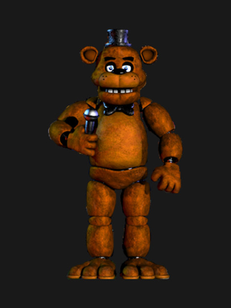
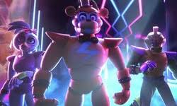

Accueil
Sur ce site, vous retrouverez l'histoire de FNAF| Je vous mets une video de screamers pour vous préparer | |
|---|---|
|  | Five Nights at Freddy's (littéralement « Cinq Nuits chez Freddy »), souvent abrégé en FNaF voire FNAF, est une série de jeux vidéo indépendants de type survival horror en pointer-et-cliquer (point-and-click) développée par Scott Cawthon. Elle a débuté en 2014 et compte neuf épisodes principaux. La série compte également quatre spin-off et a été adapté en plusieurs romans. Le but des jeux principaux est de survivre cinq nuits chez Freddy. Depuis une salle de contrôle, le joueur doit surveiller au moyen de caméras des animatroniques (ou animatronics en anglais), c'est-à-dire des robots à l'effigie d'animaux, qui cherchent à rentrer dans la pièce où se situe le joueur. Bien que ce dernier ait accès aux moniteurs des caméras, aux portes et aux lumières du bâtiment, il ne pourra pas les activer simultanément : il devra le faire en alternance. Il y a aussi une quantité de batterie à respecter. Il s'agit donc d'un jeu de gestion stressant amplifié par une ambiance horrifique. |
| Puis nous avons aussi fnaf security breach! Je vous raconte. Gregory, un jeune garçon, se retrouve enfermé dans le Freddy Fazbear Mega Pizzaplex, une pizzeria géante où des animatroniques aux noms de Glamrock Freddy, Glamrock Chica, Roxanne Wolf, Montgomery Gator semblent chercher Gregory pour soi-disant le ramener chez ses parents. Cependant, l'un d'entre eux, Glamrock Freddy, va épauler le jeune homme afin qu'il s'échappe du Pizzaplex avant six heures du matin. |  |

|
Puis nous avons pour finir fnaf 4. À l'inverse des précédents épisodes de la franchise, le joueur incarne un enfant, appelé Crying Child ou CC par la communauté, dans sa chambre, tentant de ne pas se faire attraper par les versions cauchemardesques de Freddy, Bonnie, Chica et Foxy, d'où leurs adjectifs « Nightmare » ("cauchemar" en anglais). |
Vacances apprenants - Dernière mise à jour : 11 avril 2022
Les textes et images utilisés n'engagent que son auteur : Alphonse Daudet